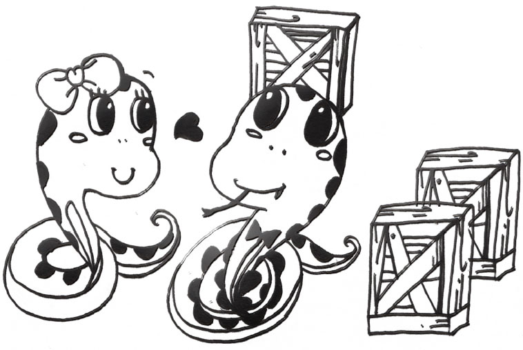

7.1 又见函数
1．Python中的函数式
在前面，我们已经见到了面向过程和面向对象两种编程范式。面向过程编程利用选择和循环结构，以及函数、模块等，对指令进行封装。面向对象实现了另一种形式的封装。包含有数据的对象的一系列方法。这些方法能造成对象的状态改变。作为第三种编程范式，函数式编程的本质也在于封装。
正如其名字，函数式编程以函数为中心进行代码封装。在面向过程的编程中，我们已经见识过函数。它有参数和返回值，分别起到输入和输出数据的功能。更进一步，我们也已经知道Python中的函数实际上是一些特殊的对象。这一条已经符合了函数式编程的一个重要方面：函数是第一级对象，能像普通对象一样使用。我将在后面章节中探索它的重要意义。
函数式编程强调了函数的纯粹性（purity）。一个纯函数是没有副作用的（Side Effect），即这个函数的运行不会影响其他函数。纯函数像一个沙盒，把函数带来的效果控制在内部，从而不影响程序的其他部分。我们曾在函数内部改变外部列表的元素，其他调用该列表的函数也会看到该函数的作用效果。这样就造成了副作用。我们知道，造成这样效果的原因是我们使用了可变更的对象，如列表和词典。因此，为了达到纯函数的标准，函数式编程要求其变量都是不可变更的。
Python并非完全的函数式编程语言。在Python中，存在着可变更的对象，也能写出非纯函数。但如果我们借鉴函数式编程，尽量在编程中避免副作用，就会有许多好处。由于纯函数相互独立，我们不用担心函数调用对其他函数的影响，所以使用起来更加简单。另外一点，纯函数也方便进行并行化运算。在并行化编程时，我们经常要担心不同进程之间相互干扰的问题。当多个进程同时修改一个变量时，进程的先后顺序会影响最终结果。比如下面两个函数：
from threading import Thread
x = 5
def double():
global x
x = x * 2
def plus_ten():
global x
x = x + 10
thread1 = Thread(target=double)
thread2 = Thread(target=plus_ten)
thread1.start()
thread2.start()
thread1.join()
thread2.join()
print(x)
上面的两个函数中使用了关键字global。global说明了 x 是一个全局变量。函数对全局变量的修改能被其他函数看到，因此有副作用。如果两个进程并行地执行两个函数，函数的执行顺序不确定，则结果可能是double()中的 x = x\2 先执行，最终结果为20；也有可能是plus_ten()中的 x = x + 10 先执行，最终结果为30。这被称为*竞跑条件（Race Condition），是并行编程中需要极力避免的。
函数式编程消灭了副作用，即无形中消除了竞跑条件的可能。因此，函数式编程天生地适用于并行化运算。其实函数式编程诞生得很早，早在20世纪50年代，Lisp语言就已经诞生。但函数式编程的使用范围局限于学术领域。近年来，电子元件的尺寸已经趋于物理极限。CPU频率的增长逐渐放缓。为了满足运算的需要，人们想到了把多个电脑连接起来，用并行化的方式来提高运算能力。但并行程序与之前的单线程程序有很大区别，程序员要处理竞跑条件等复杂问题。饱受折磨的程序员想起了古董级的函数式编程语言，意外地发现它十分适合于编写并行程序。于是，函数式编程重拾热度，渐渐成为程序员的必修内容。
Python并非一门函数式编程语言。在早期的Python版本中，并没有函数式编程的相关语法。后来Python中加入了lambda函数，以及map、filter、reduce等高阶函数，从而加入了函数式编程的特征。但Python并没有严格地执行语法规范，并且缺乏相关的优化，因此离完整的函数式编程尚有一段距离。Python的作者罗苏姆本人也从不认为Python是一门函数式语言。作为一名渐进式的开发者，罗苏姆非常看重程序的可读性。因此，他只保留了函数式编程中那些让Python更加简洁的语法糖。所以，Python中函数式语法特征可以作为体验的起点。但这还远远不够，你至少应该去深入了解函数式编程的思想。更好的情况是，你能学习一门更加纯粹的函数式语言，与Python中的所学互为对照。
在我的体会中，学习函数式编程能深刻地影响编程的思维方式。程序员编程时，很多时候是自下而上的：创建一个变量，给变量赋值，进行运算，得到结果……这是一种很自然的想法。程序员毕竟是在摆弄机器，因此第一步总会像第一次玩收音机一样，转转按钮、动动天线，看一下机器是什么反应。与之相对，函数式编程的思路是自上而下的。它先提出一个大问题，在最高层用一个函数来解决这个大问题。在这个函数内部，再用其他函数来解决小问题。在这样递归式的分解下，直到问题得到解决。这就好像“把大象放入冰箱”这个函数，在内部调用“打开门”、“把大象放进去”、“关上门”这三个函数。在这三个内部函数中，可以继续通过函数调用，向细节深入。这两种思维方式各有利弊，但让它们相互对比、相互碰撞，是学习编程的一大乐趣。
2．并行运算
在上一节中，我们已经涉及到并行运算。所谓的并行运算，是指多条指令同时执行。一般来说，一台单处理器的计算机同一时间内只能执行一条指令。这种每次执行一条指令的工作方式称为串行运算。

图7-1 串行运算：必须一个一个来
大规模并行运算通常是在有多个主机组成的集群（Cluster）上进行的。主机之间可以借助高速的网络设备通信。一个集群的造价不菲。然而，我们可以在单机上通过多进程或多线程的方式，模拟多主机的并行处理。即使一台单机中，也往往存在着多个运行着的程序，即所谓的进程。例如，我们在打开浏览器上网的同时，还可以流畅的听音乐。这给我们一个感觉，计算机在并行的进行上网和放音乐两个任务。事实上，单机的处理器按照“分时复用”的方式，把运算能力分配给多个进程。处理器在进程间频繁切换。因此，即使处理器同一时间只能处理一个指令，但通过在进程间的切换，也能造成多个进程齐头并进的效果。

图7-2 并行运算：可以齐头并进
从这个角度来说，集群和单机都实现了多个进程的并行运算。只不过，集群上的多进程分布在不同的主机，而单机的多进程存在于同一主机，并借着“分时复用”来实现并行。
下面是多进程编程的一个例子：
import multiprocessing
def proc1():
return 999999**9999
def proc2():
return 888888**8888
p1 = multiprocessing.Process(target=proc1)
p2 = multiprocessing.Process(target=proc2)
p1.start()
p2.start()
p1.join()
p2.join()
上面程序用了两个进程。进程的工作包含在函数中，分别是函数proc1()和函数proc2()。方法start()用于启动进程，而join()方法用于在主程序中等待相应进程完成。
最后，我们要区分一下多进程和多线程。一个程序运行后，就成为一个进程。进程有自己的内存空间，用来存储自身的运行状态、数据和相关代码。一个进程一般不会直接读取其他进程的内存空间。进程运行过程中，可以完成程序描述的工作。但在一个进程内部，又可以有多个称为“线程”的任务，处理器可以在多个线程之间切换，从而形成并行的多线程处理。线程看起来和进程类似，但线程之间可以共享同一个进程的内存空间。